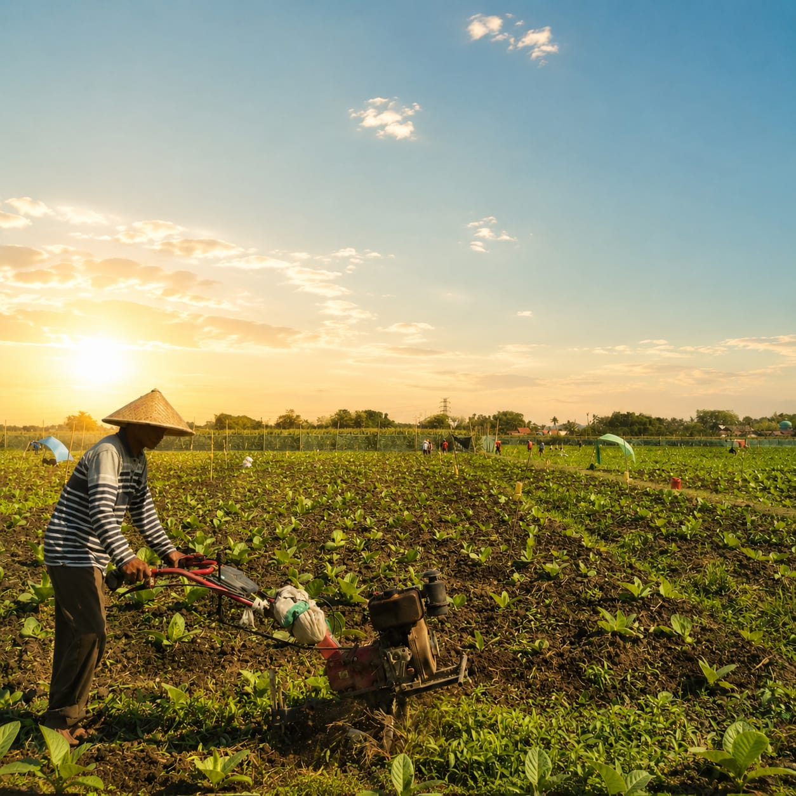
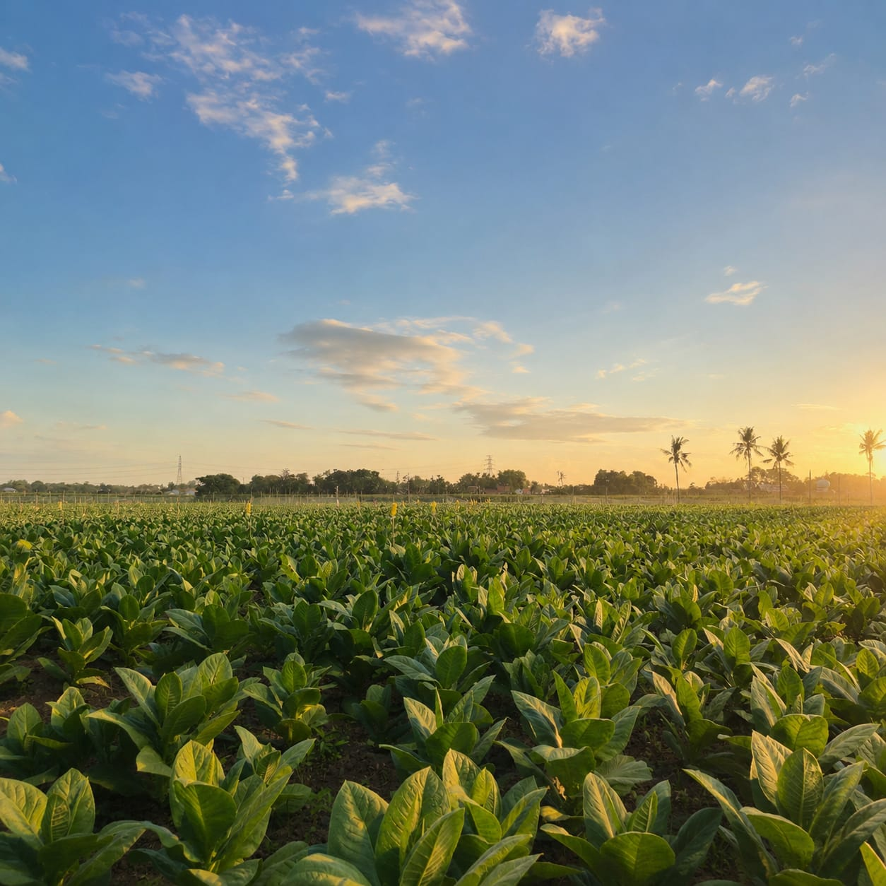
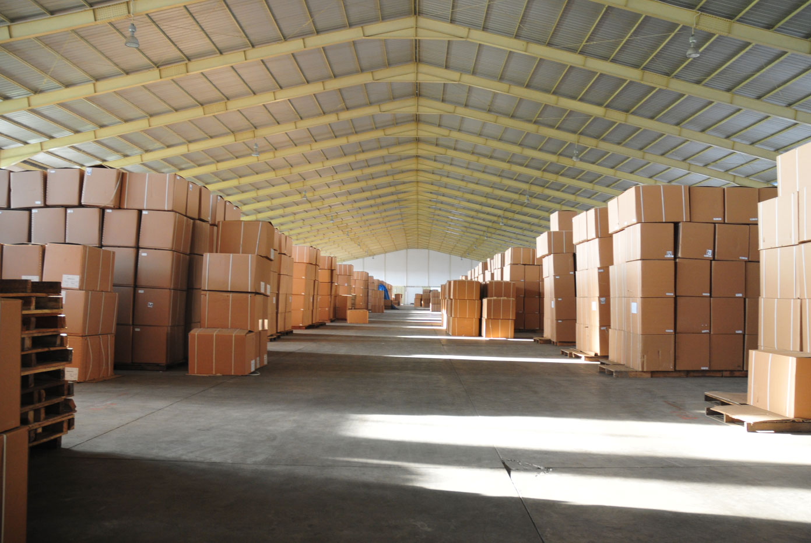
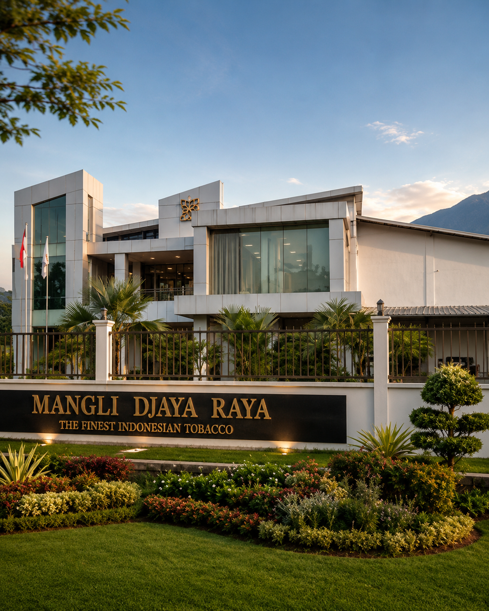
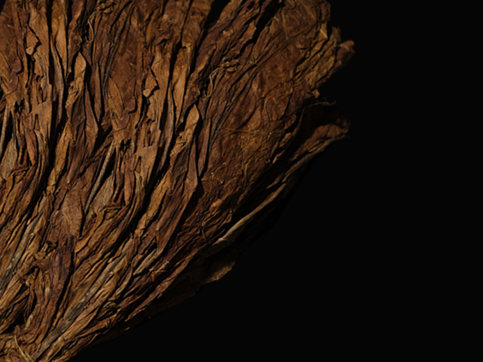
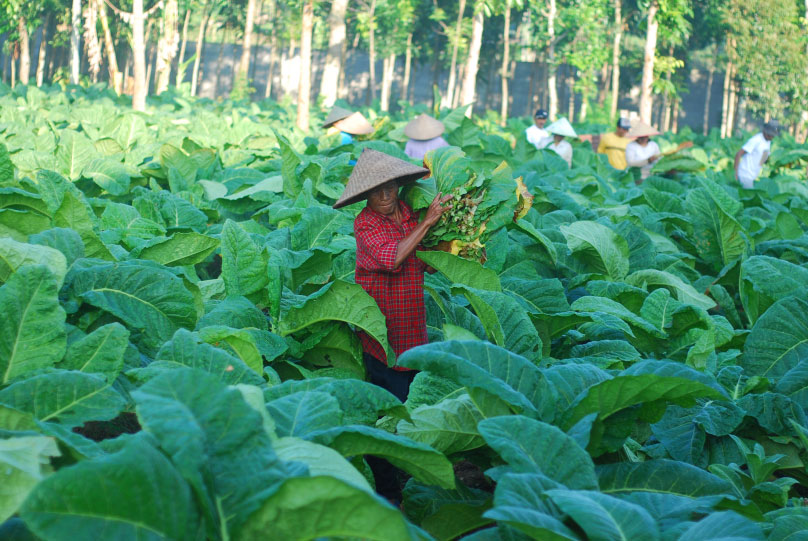
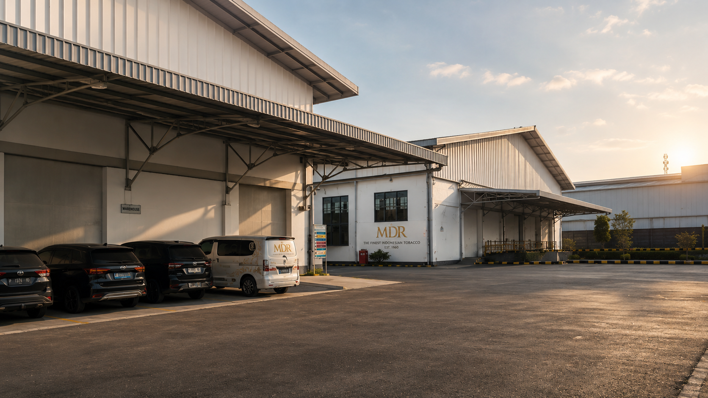

Six decades of relationships with farmers, disciplined processing standards, and a commitment to traceability shape the way we bring Indonesian tobacco to the world.

In Indonesia, tobaccos are bought from farmers through an open market that has grown over decades of mutual trust. Unlike other countries, we do not conduct any auctions — our ties with farmers are mostly commercial based, built on long-term relationships rather than one-off bidding. This approach lets us maintain consistent quality and fair pricing season after season.
We understand the concerns facing tobacco manufacturers regarding traceability. This is one of the main reasons we continue to strengthen our relationship with farmers from an educational perspective, sharing knowledge on best practices and quality benchmarks. By staying closely involved at the source, we can trace every batch back to the farms it came from with confidence.
In areas such as Jember, Lombok, and Bali, we educate farmers on the proper use of Crop Protection Agents (CPA) and good agricultural practices to achieve high quality tobacco. These programs cover soil health, harvesting timing, and post-harvest handling, helping farmers raise both yield and consistency across every planting season.

Upon receiving tobacco from the buying stations, it is our priority to deliver quality products to our customers. Every incoming batch is inspected on arrival, checked against our internal quality standards before it moves any further into the process.
Tobaccos are sorted according to the grades desired. During sortation, we maximize the removal of non-tobacco related materials (NTRMs), ensuring only clean, well-graded leaf moves forward. This stage is handled by experienced staff who understand the subtle differences between grades.
Customers can then decide the final form of their product: Handstripped, Loose Leaf, Open Laid, Butted Loose Leaf, Bundled, or Fermented. Each form is prepared to the customer's exact specification, giving flexibility across different production and shipping needs.

Every batch is checked against our internal standards before it leaves the facility. Moisture, colour, and grade consistency are verified by experienced staff so customers receive exactly the specification they ordered, shipment after shipment.

Climate-aware warehousing keeps leaf condition stable between processing and shipment. Stock is organised and tracked by batch, so every consignment stays traceable from storage to the port.

From documentation to container loading, our logistics team coordinates every shipment to meet international compliance standards and delivery timelines our partners rely on.

Leaves rest under carefully controlled conditions, allowing colour and aroma to develop naturally before grading begins. Timing here is judged by hand, not by the clock alone.

Experienced sorters separate every leaf by grade, removing non-tobacco material along the way so only clean, consistent leaf moves forward into production.

Dried naturally under open sun, this method draws out a distinct character and colour that mechanical drying simply cannot replicate.

A slower, shade-based cure that develops deeper colour and body over time, favoured for its fuller, more robust character.

Heat-cured leaf prized for its bright colour and clean, consistent burn — a staple across international blends.

Long-standing, commercial-based relationships with growers across Jember, Lombok, and Bali — built on trust rather than one-off auctions.

Incoming batches are inspected, sorted, and prepared to each customer's exact specification under one roof.

Sourcing, quality, and logistics teams work side by side to keep every order moving without delay.

Every leaf is chosen by hand, checked for colour, texture, and moisture before it moves forward.